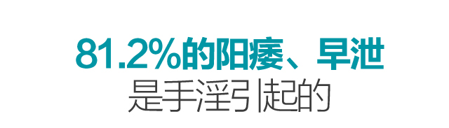

此公益活动由优波粒正欲胶囊提供
造成的危害是持续性的，犹如温水煮青蛙，千万不要以为一次两次没有对身体造成影响j就以为无害，那只是你的自欺欺人而已，古语云：一滴“精”十滴血。并不无道理，稍微学点中医就知道，精血互化，精血生气，气又维持着生命的运转。所谓“精气神”，精足了才能化气，气足了才有神！连正常的性生活自古至今都是提倡适度，你却在欲望的深渊放纵自己，还安慰自己无害。

近年来，阳痿、早泄成为男性的普遍问题，特别是30岁以上的患者由为居多，经过中国男性健康协会对患者调查表明，导致这一现象罪魁祸首主要是手淫，数据统计，其中81.2%的阳痿、早泄跟手淫有关，心理性病因（10.6%）、泌尿生殖器病因（4.2%）、内分泌病因（2%）、其他病因（2%），由此可见，手淫已经成为影响男性健康的一大重要问题。
据有关部门调查发现，近年来5成以上的婚姻问题，跟夫妻性生活不和谐有关。